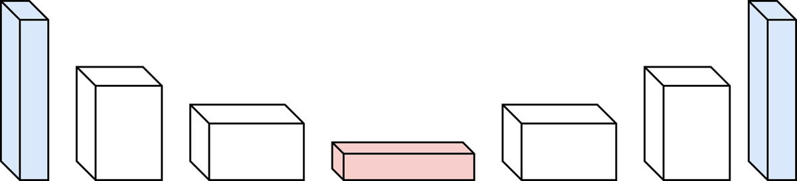
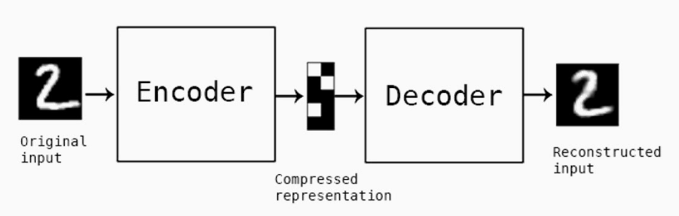
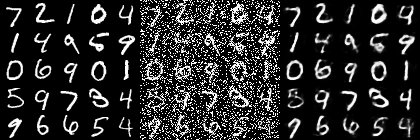
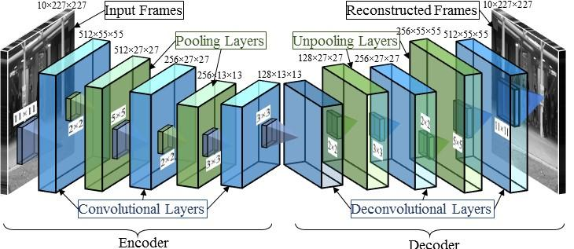
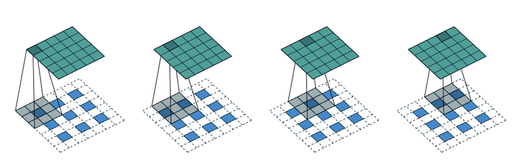
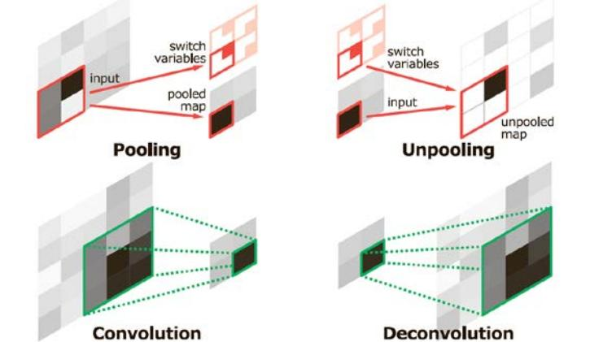

10. Autoencoders
Encoder-decoder architecture, bottleneck, denoising AE, convolutional AE, anomaly detection
1. Anomaly Detection in Computer Vision
Anomaly detection is the task of identifying events, observations, or data points that deviate significantly from expected "normal" behavior. In computer vision, this applies to detecting unusual events in images or video streams.
Well-Defined Anomalous Events
Some anomalies are specific and definable:
- Violence detection — identifying physical altercations in surveillance footage.
- Loitering — detecting people who remain in an area for an unusually long time.
- Traffic rule violations — cars running red lights, wrong-way driving, etc.
The Fundamental Challenge
Real-world anomalies are far more complicated. The core problem: it is not easy (or even possible) to list all possible anomalous behaviors. You cannot train a simple classifier because anomalies are, by definition, rare and unpredictable. A new type of anomaly may appear that was never seen in training data.
2. Anomaly Detection as Outlier Detection
The implementation follows these steps:
- Represent events as points in a high-dimensional feature space. Both normal and anomalous events are transformed into feature vectors $\mathbf{f} = [x_1, x_2, \ldots]$ by a feature extraction model.
- Model the "normal" using training data. Only normal examples are used during training. These form clusters in feature space.
- Declare statistically unlikely points as anomalies. At test time, new points that fall far from the learned clusters are anomalies.

3. Autoencoders: Core Concept
The Bottleneck Constraint
An autoencoder is forced to pass all information through a compressed representation — called the bottleneck, code, or latent space — that has far fewer dimensions than the input. This prevents a trivial identity-function solution and forces the network to:
- Compress the input into its most essential features (encoding).
- Reconstruct the input from only those essential features (decoding).
Types of Autoencoders
| Type | Description |
|---|---|
| Vanilla | Fully-connected (dense) layers only |
| Stacked | Multiple layers in both encoder and decoder |
| Convolutional (CAE) | Convolutional and deconvolutional layers; good for images/video |
| Denoising | Trained to reconstruct clean inputs from noisy versions |
| Variational (VAE) | Encoder outputs a distribution; enables generation |
Applications
- Anomaly detection (primary focus of this module)
- Image reconstruction and denoising
- Dimensionality reduction (nonlinear alternative to PCA)
- Feature learning (bottleneck representations as features)
- Recommendation systems
4. Architecture: Encoder, Bottleneck, Decoder
The Encoder
The encoder takes the high-dimensional input and progressively reduces its dimensionality through successive layers (each with fewer nodes than the previous). It produces the compressed latent representation at the bottleneck, finding the fundamental information in the input and stripping away noise.
The Bottleneck
The narrowest layer — with the fewest nodes. It holds the most compressed version of the input that the network has learned. The bottleneck dimension is a critical hyperparameter:
- Smaller: more compression, more information loss, but forces the network to learn only the most essential features.
- Larger: less compression, better reconstruction, but the network may learn a near-identity mapping without meaningful features.
The Decoder
The decoder takes the bottleneck representation and progressively increases dimensionality through layers with increasing numbers of nodes, producing the reconstructed input.
Training objective: minimize the difference between $x$ and $\hat{x}$ via backpropagation.


5. Anomaly Detection with Autoencoders
The Core Idea
- Train the autoencoder on only normal data. The encoder learns to compress normal patterns; the decoder learns to reconstruct them.
- At test time, feed new data through the autoencoder.
- Normal input: reconstructed well, low reconstruction error.
- Anomalous input: reconstructed poorly, high reconstruction error — the model has never learned patterns of anomalies.
- Threshold the reconstruction error to classify as normal or anomalous.
6. Denoising Autoencoders
Training Procedure
- Start with clean training data $x$.
- Add noise: $\tilde{x} = x + \text{noise}$ (typically white/Gaussian noise).
- Feed the noisy input $\tilde{x}$ through the autoencoder to produce reconstruction $\hat{x}$.
- Compute loss between the reconstruction $\hat{x}$ and the original clean input $x$ (not the noisy input!).
Target is the clean original $x$, not the noisy input $\tilde{x}$.

| Aspect | Standard Autoencoder | Denoising Autoencoder |
|---|---|---|
| Input to encoder | Clean $x$ | Noisy $\tilde{x}$ |
| Loss target | Clean $x$ | Clean $x$ (same) |
| Training signal | Reconstruct input | Reconstruct clean from noisy |
7. Convolutional Autoencoders (CAE)
Most state-of-the-art anomaly detection methods in video use Convolutional Autoencoders (CAEs), which replace fully-connected layers with convolutional and deconvolutional layers.
Why CAEs?
- Spatial structure exploitation: Convolutions preserve and exploit 2D spatial relationships, unlike vanilla AEs that treat each pixel independently.
- Weight sharing: Convolutional kernels are applied everywhere — far fewer parameters than fully-connected layers.
- Translation invariance: Built into the convolutional operation.
- Scalability: Scales well to large images/video.
- Reconstruction quality: CAEs are notably good at reconstructing images from lower-dimensional latent features.

CAE Architecture Example
| Side | Operations | Dimensions (example) |
|---|---|---|
| Encoder | Input frames | $10 \times 227 \times 227$ |
| Conv + Pool (repeated) | $512 \times 55 \times 55 \to 256 \times 13 \times 13$ | |
| Latent features (bottleneck) | Compressed representation | |
| Decoder | Unpool + Deconv (repeated) | $128 \times 13 \times 13 \to 256 \times 55 \times 55$ |
| Output frames | $10 \times 227 \times 227$ | |
| Aspect | Vanilla Autoencoder | Convolutional Autoencoder |
|---|---|---|
| Layer type | Fully-connected (dense) | Conv + Pooling / Deconv + Unpooling |
| Spatial structure | Ignored; input flattened | Preserved via convolutions |
| Parameter count | Very large (all pixels connected) | Small (weight sharing via kernels) |
| Translation invariance | Not inherent | Built-in |
| Best for | Small, non-spatial data | Images, video, spatial data |
8. Pooling, Unpooling, and Deconvolution
For each convolutional layer in the encoder there is a corresponding deconvolutional layer in the decoder. For each pooling layer there is a corresponding unpooling layer.
Max-Pooling (Encoder Side)
Downsamples by selecting the maximum value from each local region. A $2 \times 2$ max-pool with stride 2 reduces a $4 \times 4$ map to $2 \times 2$.

Switch Variables (Stored Max Locations)
During max-pooling, the locations (indices) of the maximum values are stored. These are called switch variables. Without these stored locations, the decoder would not know where to place values during upsampling.
Unpooling (Decoder Side)
Reverses max-pooling by placing values back at their original max locations (from the stored switch variables) and filling all other positions with zeros.
Input (4×4):
| 0.1 | 0.5 | 1.2 | -0.7 |
| 0.8 | -0.2 | -0.5 | 0.3 |
| 0.4 | 0.9 | -0.1 | -0.2 |
| -0.6 | 0.1 | 0.5 | 0.3 |
After 2×2 max-pool (stride 2): output (2×2)
| 0.8 (row 1, col 0) | 1.2 (row 0, col 2) |
| 0.9 (row 2, col 1) | 0.5 (row 3, col 2) |
Unpooling with values [1.3, 0.5; 0.4, 0.1] placed at stored max locations:
| 0 | 0 | 0.5 | 0 |
| 1.3 | 0 | 0 | 0 |
| 0 | 0.4 | 0 | 0 |
| 0 | 0 | 0.1 | 0 |
Values are placed at the stored max locations; all other positions are zero.
Deconvolution (Transposed Convolution)
A transposed convolution (deconvolution) recovers spatial resolution from compressed features. Where a regular convolution maps many input elements to one output element (many-to-one), a transposed convolution maps each input element to multiple output elements (one-to-many), effectively spreading information to a larger spatial map.


9. Autoencoder Hyperparameters
There are 4 key hyperparameters that must be set before training an autoencoder:
| Hyperparameter | Description | Effect of extremes |
|---|---|---|
| Code size (bottleneck dimension) | Number of nodes in the middle layer | Too small: excessive compression, poor reconstruction even for normal data. Too large: near-identity mapping, no meaningful features learned. |
| Number of layers (depth) | How many layers in encoder and decoder (not counting input/output) | Too shallow: cannot learn complex hierarchical features. Too deep: vanishing gradients, overfitting, training difficulty. |
| Nodes per layer (width) | Neurons per layer; decreases in encoder, increases in decoder (symmetric) | Too few: information bottleneck at multiple points. Too many: excessive parameters, overfitting. |
| Loss function | Typically MSE; measures reconstruction quality | Wrong choice (e.g., MSE for binary data instead of binary cross-entropy): suboptimal training and poor reconstruction quality. |
10. Loss Functions
Mean Squared Error (MSE)
Mean Absolute Error (MAE / L1)
Loss for Denoising Autoencoders
The loss is computed between the reconstruction and the clean original, not the noisy input that was fed to the encoder:
MSE penalizes large errors more heavily (quadratic), making it more sensitive to strongly anomalous pixels. This can be beneficial for anomaly detection — large deviations get disproportionately large scores.
MAE treats all errors equally (linear), making it more robust to a few large outliers but potentially less sensitive to localized anomalies. The CAE formula shown in the lecture, $l(x,y) = \frac{1}{N}\sum\sqrt{(x_n - y_n)^2}$, is equivalent to MAE.
11. Variational Autoencoders (VAE)
Standard autoencoders learn a deterministic mapping to a potentially discontinuous, unstructured latent space. A Variational Autoencoder (VAE) addresses this by making the encoder produce a probability distribution over latent space rather than a single point.
VAE Encoder
Instead of mapping input $x$ to a single latent vector $z$, the encoder maps $x$ to the parameters of a Gaussian distribution:
The latent vector is then sampled: $z \sim \mathcal{N}(\mu, \sigma^2)$.
The Reparameterization Trick
Sampling from $\mathcal{N}(\mu, \sigma^2)$ is a stochastic operation that breaks the backpropagation chain. The reparameterization trick rewrites sampling as:
The randomness is externalized to $\epsilon$ (which has no network parameters). Gradients can flow through the deterministic $\mu$ and $\sigma$ back to the encoder weights, enabling end-to-end backpropagation.
VAE Loss Function
Role of the KL Divergence Term
The KL divergence regularizes the latent space by forcing the learned distribution $q(z|x) = \mathcal{N}(\mu, \sigma^2)$ toward the standard normal prior $p(z) = \mathcal{N}(0, I)$:
- Regularization: Prevents the encoder from mapping each input to a completely different, disconnected region.
- Continuity: Similar inputs map to nearby points in latent space.
- Completeness: Every point in latent space, when decoded, produces a meaningful output.
- Generation: You can sample $\epsilon \sim \mathcal{N}(0, I)$ and decode to generate new data.
Without the KL divergence term, the VAE degenerates into a standard autoencoder. The encoder learns to map each input to very small-variance point estimates in disconnected regions of latent space. This leads to a discontinuous latent space with gaps, no ability to generate meaningful new data by sampling, and no regularization (the model may overfit to training data).